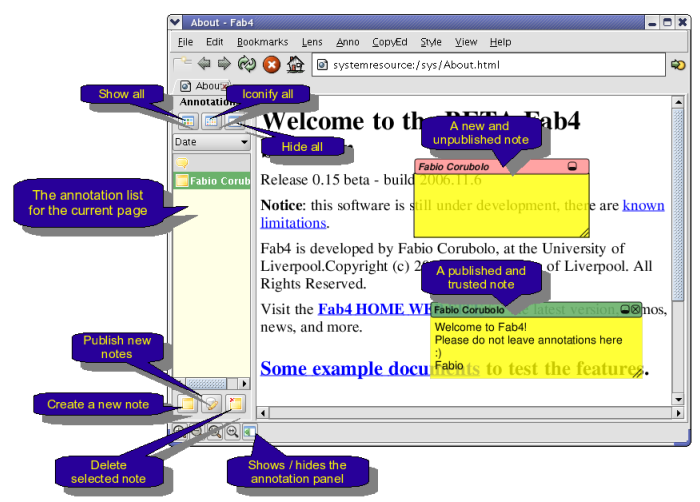

User Manual
The Fab4 browser tries to be as simple as possible to use, but please
consider it's still under
development, so there are some known bugs and limitations.
Notices:
- The original pages / documents are never modified by Fab4's annotations, and the notes/changes are only visible when using Fab4.
- Annotations are public by default, so they will be seen by anybody using Fab4 open the document.
- You can now switch to private annotations in the left annotation pane (or by un-checking "Annotations are public" in the annotations menu.
Private or Public, save or copy?
Here is some clarification on the type of notes and about publishing them:
* public = remote server = distributed = seen by anyone
* private = local = individual = saved on the local machine, private to teh user
The Buttons have the following meanings:
* Save public = saves *new* notes (the ones not in the list) to the server
* Save private = saves *new* notes (the ones not in the list) to the local copy
and
* Copy to public: copies the selected notes (from the list!) to the server
* Copy to private: copies the selected notes (from the list!) to the local database
Main Screen -- needs update --

Creating, publishing, deleting annotations
You can add annotations to a document in different ways. The simple
note can be added using the "Create new note" button in the bottom-left annotation
bar. The other annotation types are available under the annotation, CopyEd and Style menus.
Most annotation types (actually all but Note and Callout note) require some text selection before being created, so you will need to select an area of text and then open the menu.
Callout notes are attached to a specific element in the page: once
created, it's possible to move the arrow and make it point to a
specific element.
The annotations created need to be published to the server in order to
be shared with others, otherwise they will be lost. To publish and than
delete the annotations you can use the two buttons following "create
new note" in the bottom-left button bar.
Handling the published annotations
The annotation list on the left of the page shows all the published
annotations. Selecting one element form there, that element will gain
focus and it will be possible to delete the note (if you are the owner)
or show the special properties by pressing the right button. The
dropdown list that normally shows "Date" on top of the list allows
selecting the sorting order of the notes. The three buttons on top of
the dropdown list allow showing and hiding the Notes in the page
(Note: this far only the Note and Callouts will be hidden, while the
other annotation types will be visible.
Background information
More information is available here: http://bodoni.lib.liv.ac.uk/VRE/